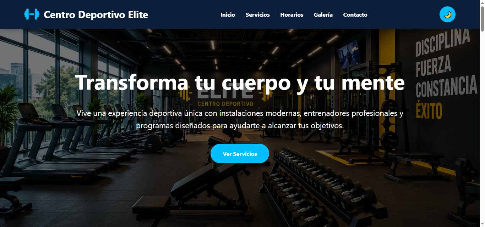

PROYECTO ACADÉMICO
Centro Deportivo Elite
Sitio web de un gimnasio desarrollado con HTML, CSS y JavaScript. Incluye inicio, servicios, horarios, galería, formulario de contacto, diseño para celular y modo claro/oscuro.
Proyecto de Gestión y Diseño Web ↗